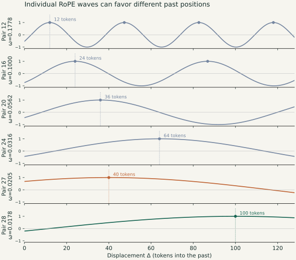
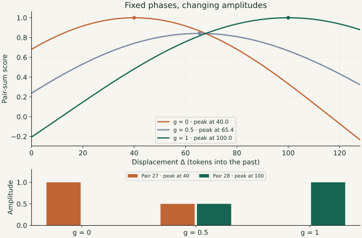

Attention and positional encodings · Part 1
ROPE exploration
I wanted to understand how a transformer knows where to look. RoPE seemed like a good place to start. The parallel to the discrete Fourier transform (DFT) is fairly obvious, and I wanted to explore it in more detail.
The usual explanation is that RoPE rotates query and key vectors so their similarity depends on the distance between them. That explains the mechanism. What I wanted to know was what the mechanism could do.
Could a head look for something eighty tokens ago? Could it prefer a whole neighborhood rather than one position? Could it avoid a region? And if all of that was possible, did trained models actually use it?
Before trying to answer those questions, let’s start with what RoPE actually does.
What does RoPE change?
An attention head compares a query from one token with keys from the tokens it can attend to. A high dot product gives a key a higher attention score. Those scores become weights for combining information from the corresponding value vectors.
The words themselves are not enough to describe their relationship. “The dog followed the child” and “The child followed the dog” contain the same words, but their positions change the meaning.
RoPE—short for Rotary Position Embedding—brings position into the query–key comparison by rotating the vectors before taking their dot product. Its original description is in Su and colleagues’ RoFormer paper.
Each pair of coordinates rotates at its own frequency. When we expand the dot product, we get a sum of sines and cosines of the relative displacement. That is the connection I want to follow. Hua and colleagues’ Fourier Position Embedding paper (ICML 2025) makes this connection explicit: Section 2.2 interprets RoPE’s score as an inverse non-uniform DFT.
A shape, written as frequencies
First, a quick reminder of the ordinary DFT. Take a list of N samples. The DFT rewrites that list as coefficients of equally spaced frequencies. The inverse transform adds those components back together:
Each complex coefficient sets the amplitude and phase of a component; i is the imaginary unit. With all the coefficients, we recover every original sample, up to numerical rounding. This is true for any finite list of samples. It does not tell us the unknown continuous function between those samples.
Here is one shape: a smooth bump followed by a flat plateau. I reconstructed its 128 samples using progressively more frequency bins.

Why 65 stored bins rather than 128? For real-valued samples, the negative-frequency coefficients are conjugates of the positive-frequency ones. We only need one side of that spectrum. But a complex number is stored as two real numbers—its real and imaginary parts—so this is not a magical factor-of-two compression.
For 128 real samples, the 63 non-endpoint complex coefficients contain 126 real numbers. The zero and Nyquist coefficients are real, giving 128 independent real numbers in total.
The same idea, with RoPE’s frequencies
RoPE gives us a different collection of frequencies. For a head with d coordinates, there are d/2 coordinate pairs. The usual schedule is:
Here B is the base; I use 10,000 in the examples below. Each frequency is the previous one multiplied by the same factor:
So the frequencies are geometrically spaced: unevenly spaced on an ordinary axis, evenly spaced on a logarithmic one. The DFT’s frequency grid, by comparison, has a constant difference between neighboring frequencies.

From the dot product to waves
Start with ordinary attention: a query compares itself with a key through the scaled dot product qTk/√d. Group the coordinates into pairs. A pair is also a complex number: zq = qx + iqy, and similarly for the key. Its dot product is the real part of the query times the conjugated key:
Here rq and rk are the pair lengths, θj is their initial angle difference, and the bar denotes complex conjugation. So the score combines two things: how well the directions align, and how large the vectors are.
RoPE keeps those lengths and turns the query and key by ωjm and ωjn. Their angle difference gains ωj(m − n). Calling that relative displacement Δ, the pair contributes:
For fixed query and key content, that is a wave in relative position: their lengths set its amplitude, and their initial angle sets its phase. Each pair supplies one such wave at its own frequency. Adding all the pairs, in complex notation, gives:
We have arrived at the same kind of synthesis as the inverse DFT above: complex coefficients weight rotating waves, whose sum produces a shape. The DFT uses a uniform frequency grid; RoPE uses its geometric schedule. The query and key provide the coefficients. That is the Fourier connection I wanted to explore.
How does this become aⱼ cos + bⱼ sin?
Expanding cos(θj + ωjΔ) collects the fixed content factors into two coefficients:
Equivalently, cj = aj − i bj. In coordinates, aj = (qxkx + qyky)/√d, and bj = (qxky − qykx)/√d.
Does taking the real part reduce expressivity?
For the real-valued score functions supported by these frequencies, no. We retain the complex coefficients and take the real part of the synthesized output. Both sine and cosine terms survive:
Making the coefficients themselves real would remove the independently adjustable sine terms. That is a different restriction. A complete inverse DFT can reconstruct any real sampled sequence with conjugate-symmetric coefficients; taking its real output adds no restriction. For RoPE, the finite frequency set and the learned coefficients constrain which shapes are available. Taking the real output is not an additional loss of real-valued expressive power. An arbitrary complex-valued target would, of course, also need an imaginary output.
ROPE in the same way as DFT is a universal function approximator
This is the intuition I wanted to explore: combine frequencies to build a desired positional shape. “Universal” needs a qualification here: a fixed RoPE head has a finite set of frequencies, so it cannot approximate every function arbitrarily well. The examples test what it can express on a chosen interval.
Now I can turn the original question into a small experiment. Choose a desired score at each of 256 displacements, then fit the sine and cosine coefficients using RoPE’s frequencies. I used a 128-dimensional head: 64 frequencies and 128 real coefficients.
The first three targets are a peak eighty tokens away, a broad neighborhood, and two separate regions. The last is deliberately harder: a spike at a single token.

The smooth shapes fit closely. The single-token spike does not: its peak is badly underestimated, even though the average error looks small because almost all the target samples are zero. With this frequency set and fitting method, a narrow spike is much harder to represent than a broad preference.
I used a small penalty on coefficient size to avoid fitting through enormous coefficients that cancel one another. In symbols, the fit minimizes:
There is an important qualification to “RoPE approximates what a DFT represents exactly.” A complete DFT is a basis for the sampled sequence. Here I chose fewer real coefficients than target samples, geometrically spaced frequencies, and a penalty on coefficient size. Those choices make this an approximation. Non-uniform spacing alone does not forbid exact interpolation: a non-uniform system with enough independent columns can also match finite samples exactly, although it may be poorly conditioned.
Combine the frequencies, then shift the shape
First, we combine the specific frequencies RoPE gives us. Their amplitudes determine how strongly each contributes. Setting an amplitude to zero removes that frequency’s contribution; setting it close to zero suppresses it. Their phases determine where the peaks and troughs fall. Adding them lets some parts reinforce one another and other parts cancel. That is how we obtain the peak, broad neighborhood, and two-region examples above.
Once we have a shape, we can move it. To make the shift easier to see, I rewrite the same sine-and-cosine contribution using an amplitude and a phase:
The capital Aj is the combined amplitude, rather than the earlier cosine coefficient aj. Expanding the right-hand side gives aj = Aj cos φj and bj = −Aj sin φj. The sine term is still there: it is absorbed into the phase shift. If both coefficients are zero, the contribution vanishes and its phase is irrelevant. With x = ωjΔ, the whole sum becomes:
To translate the entire shape by t tokens, keep those amplitudes and change each phase by an amount proportional to its frequency:
These coordinated phase changes belong to the query/key coordinate pairs before applying RoPE: they change the learned content phases, then RoPE adds its usual position-dependent rotation. For example, keeping the keys fixed, rotate query pair j by −ωjt before RoPE to obtain the shift above. Each frequency needs its own phase change; giving every pair the same angle would generally change the shape instead of simply moving it. For a language model to use this mechanism, it would have to produce the right, different phase changes across many pairs while preserving the relevant amplitudes and key content. That seems like a demanding coordination problem to me; it is an intuition, rather than a measured claim about how hard it is for a model to learn. In this demo, one shared shift controls every rotation explicitly. The demo shows a mathematical possibility. It does not establish that a trained language model uses this mechanism to move an attention pattern by a few tokens. Try moving the fitted examples below. A positive shift moves the preference farther into the past.
Same fitted coefficients and geometric frequencies as above; the phase shift is computed directly, without refitting. The shifted line is shown only where it samples the original 0–255 fitting interval. The displayed window crops the translated shape at its edges.
All 64 pairs, moving together
Each dial below is one frequency pair in this constructed score. A single shift t changes all 64 phases together, but the angular speed is different for each pair: Δφj = −ωjt. The high frequencies at the top turn quickly; the low frequencies at the bottom barely move over the same number of tokens.
Gray dashed arrows show the original phases; green arrows show the shifted phases. Arrow lengths are normalized so the angle is visible. These are phases of the fitted pair-score coefficients, not measured query or key activations. Hover over a dial for its frequency, coefficient amplitude, and phase change.
Moving the peak by changing amplitudes
That said, coordinated phase changes are not the only way to move a positional preference. We can also change the amplitudes. Each pair’s contribution is weighted by the product of its query and key lengths, so changing those lengths changes which waves dominate the sum.
Look at the individual waves first. For fixed query and key content, each pair contributes a cosine with its own frequency and initial phase. Its peaks can fall at different distances into the past. Making one pair stronger gives those positions more weight in the sum.

For a simple example, take two RoPE pairs with fixed phases: one peaks 40 tokens into the past, the other 100 tokens into the past. Increase the second pair’s amplitude while reducing the first’s, and the combined score peak moves toward the second location:

Softmax preserves the location of the highest score, so its attention peak moves too. Here the pattern changes shape as the waves are reweighted; it is not the rigid translation produced by the coordinated phase rule. A model could change amplitudes, phases, or both. This example shows another mathematical possibility, rather than evidence that a particular model uses it.
The two routes ask different things of a model. Translating a whole score pattern requires coordinated query-phase changes across many pairs. Moving its peak through amplitude modulation can sometimes require adjusting only a couple of pairs, as in the example above. It seems to me that it would be easier for the model to learn such a mechanism, although this remains an intuition about learning difficulty.
Matching by semantics vs position
At the slow end of RoPE’s frequency schedule, neighboring pairs barely rotate over the context window. Their positional effects become very similar: there is considerable positional redundancy. They can still carry different content, because each pair has its own learned query and key projections.
This suggests a division of labor. Slow pairs have been hypothesized to support semantic matching: finding a key by what it represents, with little sensitivity to where it appears. Faster pairs can provide stronger positional preferences. Barbero and colleagues’ Round and Round We Go! develops this interpretation from trained models. Hua and colleagues’ Fourier Position Embedding also explores retaining content channels while removing very slow positional rotations.
A single pair can, in principle, do both: its learned query–key angle depends on content, and RoPE adds a distance-dependent rotation. It can therefore favor a semantic match at a particular relative position.
But with slow and fast pairs available, a head can combine these roles across pairs: some identify the relevant feature, while others favor its location. My working hypothesis is that this specialization makes joint semantic-and-positional matching within an individual pair less common. The frequency layout makes that interpretation plausible; it does not establish how often models use either approach.
Slow positional rotation still leaves the learned content angle in place. Whether we can store that angle more coarsely is a separate question, explored in the phase-quantization experiments in Part 2.
Where this leaves me
Following the dot product led me to a useful picture of RoPE: the query and key set the amplitudes and phases of a collection of waves, and position turns those waves at different speeds. Their sum can build a positional preference, much as Fourier components build a shape. Coordinated changes to the content phases can translate that shape mathematically, while amplitude changes can move its peak. These examples show what the mechanism can express; they do not establish how a trained model uses it.
The slow frequencies add another possibility. With little rotation over the context window, they can preserve content matching across positions, while faster pairs contribute stronger positional preferences. A head can combine those contributions to look for both a relevant feature and a useful location. The learned content angles still matter, even when the positional rotation is tiny.
The next question is what these pairs actually look like in a trained model. In Part 2, I explore the query and key clouds in Qwen, the patterns that suggested rounding their phases, and the effects of that quantization on predictions and runtime.
Reproduce the figures
The constructed DFT and RoPE examples come from this Python script. It defines the target functions, fits the coefficients, and saves the figures together with the numerical errors and all plotted samples and coefficients. No model downloads or external data are needed for these constructed examples.
python -m pip install -r requirements.txt
python code/figures.py
python code/amplitude_modulation.py
python -m unittest discover -s code -p 'test_*.py'Source and editing on GitHub · References: RoFormer; Fourier Position Embedding (§2.2); NumPy DFT conventions.